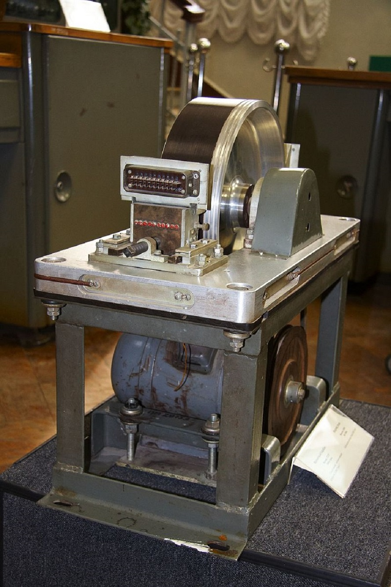
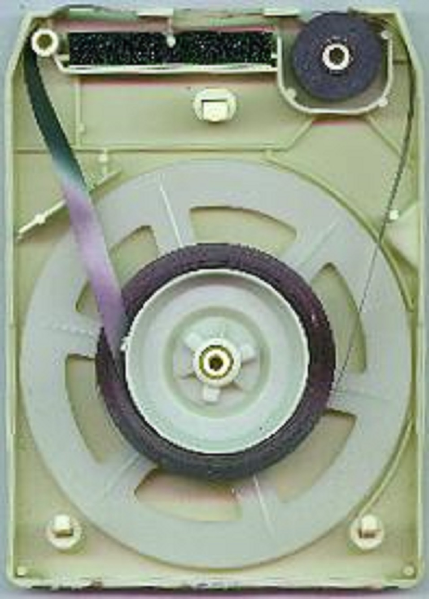
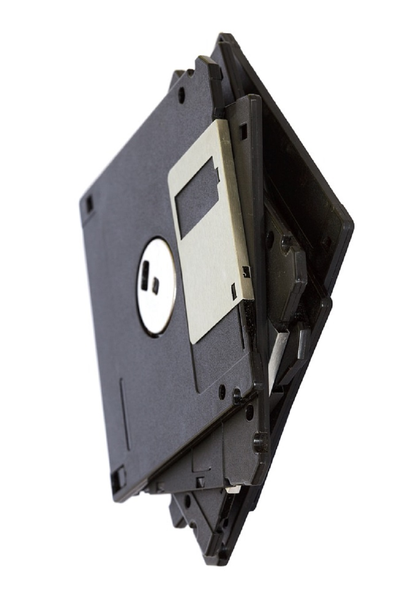

A háttértár olyan számítógépes hardverelem, mely nagy mennyiségű adatot képes (kis költséggel) tárolni, és azokat a számítógép kikapcsolása után is megőrzi. Erre azért van szükség, mert a számítógép műveleti memóriájában csak ideiglenesen lehet adatot tárolni, ennek tartalma a számítógép kikapcsolása után törlődik.
A mai számítógépek legtöbbje digitális, azaz számokkal dolgozik, minden adatot (kép, hang, egyéb) számokká alakítva kap meg, így számokat dolgoz fel és azokat kell, hogy eltárolja. A tároló eszközök különböző (mechanikai, mágneses, elektronikus és optikai) elveken tárolják az adatokat.
A meghajtó mechanikus részei végzik az adathordozó (lemez, szalag) mozgatását, az elektronika pedig az írás-olvasás pozícionálás vezérlését. A mágnesezés (írás), és a mágneses úton felírt jelek visszaalakítása árammá (olvasás) az író-olvasó fejek feladata. Az író-olvasó fej a lemez bármely pontját el tudja érni, mert a lemezt középpontja körül villanymotor forgatja és az író-olvasó fej sugárirányban mozog. A mágneslemezes adathordozó fémbõl vagy mûanyagból készül. Felületét jól mágnesezhetõ réteg borítja. Az információ (bitek sorozata) a lemezen mágneses jelek formájában jelenik meg, amely sok éven át megõrizhetõ.

A mágnesdob történelmileg a számítástechnika legrégebbi digitális mágneses tárolója. A mágnesdobos tárolót, mint mágneses elvű adattároló eszközt, Gustav Tauschek osztrák mérnök és informatikus találta fel Ausztriában, 1932-ben. 1950 és 1960 között ez volt a legelterjedtebb tároló. Ezen tárolták a programokat és a különböző adatokat is. A korai számítógépekben a mágnesdob az elsődleges és a másodlagos tároló szerepét is betöltötte: gyorsasága miatt alkalmas volt operatív tárnak is (ez a mostani gépek RAM memóriájának felel meg), valamint a háttértár szerepét is betölthette.
Megnézem
A számítástechnikában a mágnesszalagos adattárolást a háttértárak és archív tárak céljaira alkalmazzák, a mágnesszalag megjelenése óta egészen a jelenkorig. A mágnesszalagos tároló jellemzői a soros (lineáris, szekvenciális) hozzáférés és a viszonylag nagy elérési idő: egy adat elérése a szalag tekercselését is beleszámítva többször tíz másodperc ideig eltarthat, szemben például a mágneslemez ms-os (3 nagyságrenddel kisebb) elérési idejével – amivel a mágneslemez már tetszőleges elérésű tárnak tekinthető.
MegnézemA merevlemezes egységben több, egymás felett elhelyezkedő, mágneses réteggel bevont könnyűfém lemezt helyeznek el. Az adatokat ebben az esetben író-olvasó fej segítségével lehet elérni, minden lemezhez tartozik egy-egy ilyen fej, amelyet egy fejmozgató egységre szerelnek fel. Az állandó sebességgel, gyorsan forgó lemezektől a fej kis távolságban mozog. A merevlemezek zárt külső borítása védi az adatokat tartalmazó lemezeket a külső mechanikai sérülésektől és szennyeződésektől.
Megnézem
A hajlékonylemez egy mindkét oldalán mágnesezhető réteggel ellátott műanyagból készült korong. A külső fizikai behatásoktól egy tok védi meg, aminek a belső oldala a nagyobb méretű lemezeknél filc borítású. A lemezt a használathoz nem kell (és nem is lehet) kivenni a tokjából. Az író-olvasó fejnek és a lemez forgató mechanikának a megfelelő rések ki vannak vágva a tokon.
Megnézem| Név | Átmérő |
|---|---|
| Laser Disc | 30 cm |
| Laser Disc | 20 cm |
| CD video | 12 cm |
| Video CD | 12 cm |
| CD | 12/8 cm |
| DVD | 12 cm |